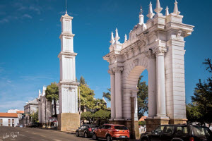

No es necesario buscar para en contrar lugares de interes en trinidad - Bolivia,en la plaza principal, "José Ballivián",es un lugar turistico que se en cuentra en el centro de la ciudad , con muchos arboles antiguos y una fuente de agua con muchos peces .

Los platos Tipicos son :
- Majadito
- Masaco
- locro
- Gallinaso